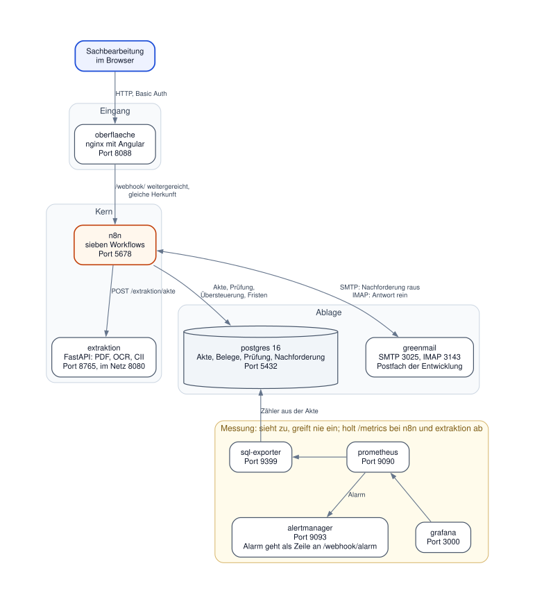
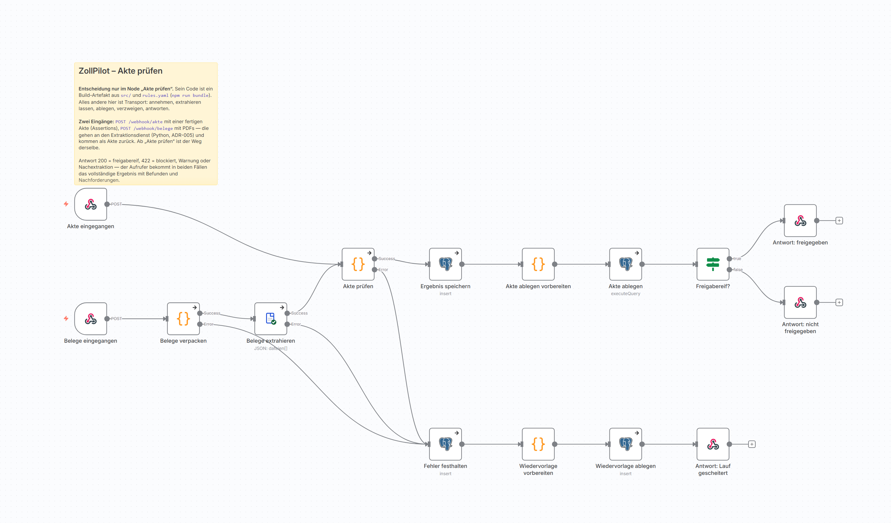
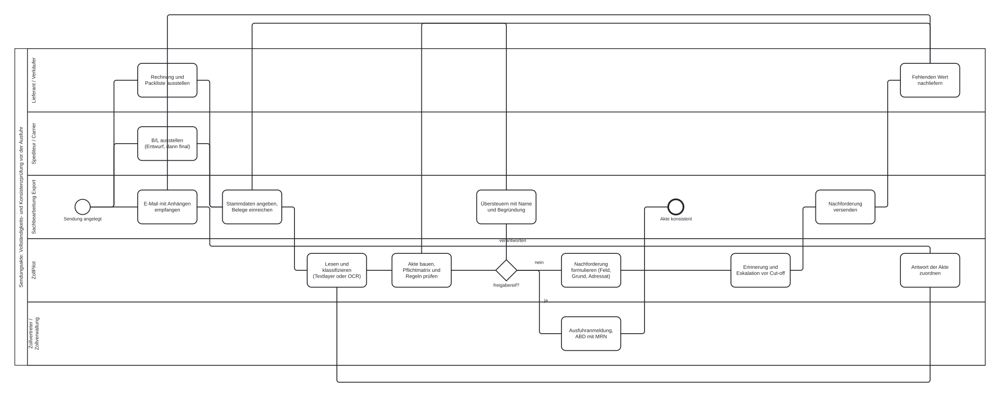
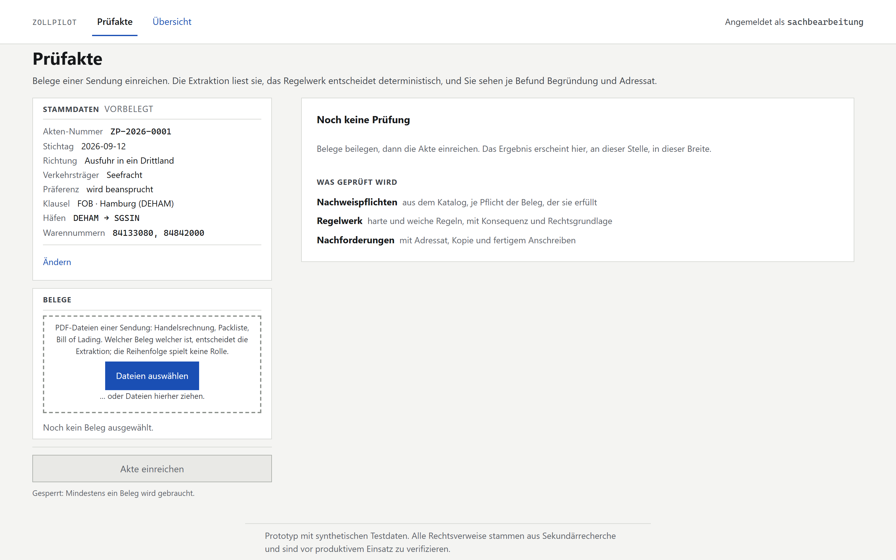
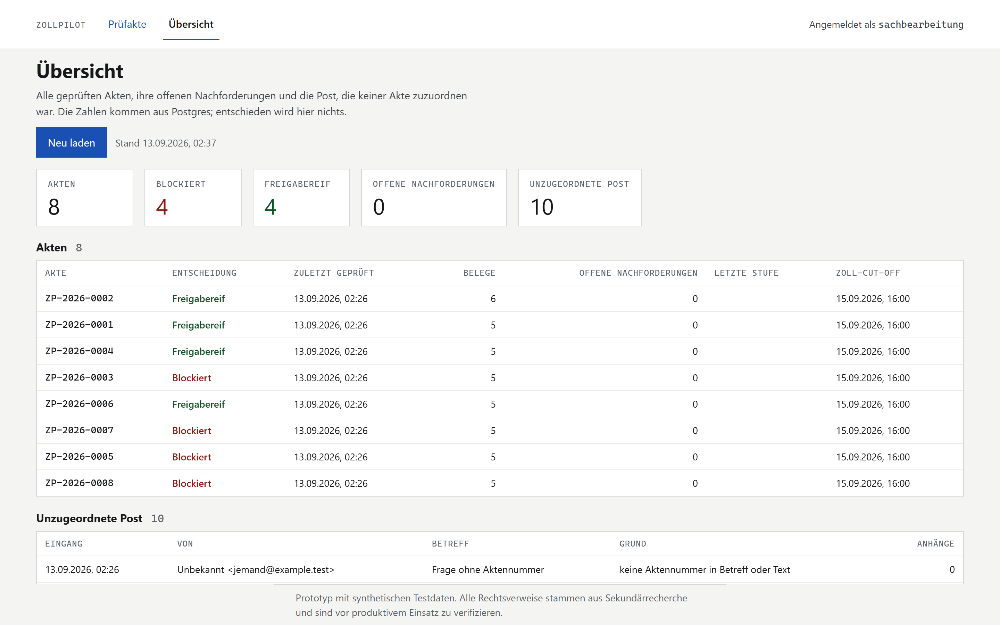

ZollPilot prüft vor einer Ausfuhr, ob die Belege einer Sendung vollständig sind und zusammenpassen. Belege kommen als PDF, Scan oder XML-Datensatz herein, werden gelesen und als Behauptungen an eine Akte gehängt. Ein Regelwerk entscheidet auf den daraus abgeleiteten Fakten über Freigabe oder Blockade, fehlende Nachweise werden per Mail nachgefordert, und eine Antwort mit Anhang findet ihre Akte über das Aktenzeichen wieder. Eine Sachbearbeitung sieht jeden Befund mit Fundstelle und kann ihn übersteuern, mit Name und Begründung.
src/ entscheidet, und ein Mensch übersteuert, ohne
den Befund zu ändern.
Der Auftraggeber dieses Projekts ist ein Anforderungsprofil, wie es der Markt für n8n-Projekte in Logistik und Zoll ausschreibt: Workflows mit IDP und OCR, Vollständigkeitsprüfung, Nachforderungsprozess, Integrationen, Monitoring und Prozessdokumentation. Ziel war nicht ein Demo-Workflow, sondern ein Repo, in dem jeder Punkt des Profils einen Beleg hat oder ehrlich als nicht belegbar dasteht. Das Anforderungsmapping steht im Repo und wird von einem Gate geprüft: Jeder Pfad in der Belegspalte muss existieren.
Aus der Fachrecherche zu Dokumententypen, Pflichtangaben und Zollprozess entstanden vier Regeln, die jede Entscheidung im Projekt gebunden haben: Nachweis statt Dokument, Rohwert und Aktenwert getrennt, Regeln sind Daten, kein Modell in der Entscheidung. Alles, was diesen Regeln widerspricht, ist eine ADR wert oder nicht gebaut.
Gebaut wurde im September 2026, mit KI-Agenten als Werkzeug und einem Entwicklungslog, das je Sitzung festhält, was gebaut wurde, was nicht funktionierte und was die Tests gefunden haben. Das Log ist Teil der Abgabe, mit den Fehlern.
erfuellt, verletzt oder nicht_pruefbar; ein Prüfziffernfehler bei niedriger Konfidenz ist ein Lesefehler, keine Ablehnung.| Bereich | Technologie |
|---|---|
| Orchestrierung | n8n 1.114 in Docker, sieben Workflows als JSON-Export, Code-Nodes gebündelt aus src/ und dem Regelkatalog, ein eigener Node zollPilotExtraktion in TypeScript, Import beim Start statt Klicks im Editor |
| Entscheidung | JavaScript ohne Framework in src/: Aktenaufbau, Pflichtmatrix, 14 Regeln, Übersteuerung, Nachforderung; Schwellen und Rechtsverweise in rules.yaml mit Gültigkeitsdatum |
| Extraktion | Python 3.12, FastAPI, pdfplumber, pypdfium2, Tesseract, lxml für CII gegen das D16B-Schema; Anbieterleser für Google Document AI und Azure über REST mit Aufzeichnungen im Repo |
| Oberfläche | Angular 22 mit ngrx, ausgeliefert von nginx, das /webhook/ an n8n weiterreicht (gleiche Herkunft statt CORS) und den angemeldeten Namen als Kopfzeile anhängt |
| Ablage und Post | Postgres 16, nur anhängend, mit Views für Regelergebnis und Übersteuerungswirkung; GreenMail für SMTP und IMAP in der Entwicklung, ein echtes Postfach über .env |
| Betrieb und Qualität | Docker Compose mit zehn Diensten und Healthchecks, Prometheus, Alertmanager, SQL-Exporter, Grafana; Git-Hook und GitHub Actions mit acht Jobs; Gates für Belege, Prosa, Verweise, Regeln, Kontrast, Workflows, Diagramme |
| Schicht | Aufgabe |
|---|---|
| Browser | Angular hinter Basic Auth am Proxy. Reicht Stammdaten und Belege ein, zeigt den Befund, schickt eine Übersteuerung. Entscheidet nichts. |
| n8n | Nimmt an, reicht weiter, legt ab, verzweigt, antwortet. Entschieden wird ausschließlich im Code-Node „Akte prüfen“ und in zwei Nodes der Nachforderung, alle aus src/ gebündelt. |
| Extraktion | Liest und behauptet: Wörter mit Koordinaten, Belegtyp, Felder, Assertions mit Konfidenz. Setzt keinen Fakt, kennt keine Schwelle, ruft im Entscheidungsweg kein Modell. |
| src/ | Entscheidet deterministisch: Fakten nur aus finalen Belegen, Nachweis statt Dokument, hart vor weich, Lesefehler vor Fachfehler, Übersteuerung verantwortet statt umentscheidet. |
| Postgres | Akte, Dokumente, Assertions je Prüfung, Prüfung, Übersteuerung, Nachforderung, Versand, Posteingang, Fehler, Wiedervorlage, Alarm. Nur anhängend. |
| Messung | Prometheus holt Zähler bei n8n, Extraktion und Datenbank; kein Pfeil führt zurück in die Akte. |

unclassified.| Workflow | Aufgabe |
|---|---|
| Akte prüfen | Zwei Eingänge, /webhook/akte mit Assertions und /webhook/belege mit PDFs; Extraktion, Prüfung, Ablage, Antwort 200 oder 422 mit allen Befunden. Fehlerzweig mit Wiedervorlage und Antwort 500. |
| Nachforderungen | Täglich oder auf Zuruf; entscheidet je Akte, was neu, erinnert oder eskaliert wird, versendet per SMTP, hält den Versand fest. |
| Posteingang | Holt Antworten per IMAP, ordnet sie über das Aktenzeichen zu, extrahiert Anhänge, prüft die Akte neu; Unzugeordnetes wird festgehalten, nicht verworfen. |
| Übersicht lesen | GET /webhook/akten für den Übersichtsbildschirm. Eine Abfrage, kein Urteil. |
| Lauf wiederholen | Schickt einen gescheiterten Lauf aus der Wiedervorlage noch einmal an denselben Eingang. |
| Alarm | Nimmt Alarme vom Alertmanager an und legt sie als Zeile mit Beginn und Ende ab. |
| Fehler | Der Auffangworkflow von n8n: reduziert einen Abbruch auf das Aussagekräftige ohne Belegtext und legt ihn ab. |
Sechs Stellen, an denen das Projekt über „Workflow ruft Dienst“ hinausging.
Eine falsch gelesene Containernummer fällt durch die Prüfziffer. Wer daraus eine fachliche Ablehnung macht, blockiert eine korrekte Sendung wegen eines schlechten Scans; wer sie durchwinkt, hat die Prüfziffer umsonst.
Jede Assertion trägt eine Konfidenz, das Minimum über ihre Wörter. Fällt ein Prüfziffern- oder Summenvergleich durch und liegt die Konfidenz unter der Katalogschwelle, ist das Ergebnis re_extraction_required, nicht verletzt. Zehn von vierzehn Regeln kennen diesen Pfad; der Rauchtest führt ihn mit einem echten, absichtlich schlechten Scan vor.
Die Grenze zwischen Lesen und Entscheiden ist die wichtigste Linie im System. Die Extraktion kennt die Schwelle nicht, das Regelwerk kennt keine Bilder, und trotzdem greifen beide an derselben Stelle ineinander.
Zwei Belege widersprechen sich, ein B/L liegt erst als Entwurf vor, eine Rechnung kommt zweimal. Ein Dokumentenmodell muss dann entscheiden, welches gewinnt, und verliert dabei, was das andere sagte.
Belege liefern Assertions mit Fundstelle und Konfidenz, die nie überschrieben werden. Fakten entstehen nur aus finalen Belegen; ein Entwurf bleibt sichtbar, setzt aber nichts. Die Pflichtmatrix fragt nach Nachweisen, nicht nach Dokumenten, und nennt je Nachweis, wer ihn liefern muss. Damit läuft eine Rechnung als XML-Datensatz mit Konfidenz 1 und ohne Fundstelle durch dieselben Regeln wie ein Scan.
Eine Nachforderung braucht Feld, Grund und Adressat. Das geht nur, wenn das System weiß, welcher Nachweis fehlt und wer ihn schuldet, und nicht bloß, dass ein PDF nicht da ist.
Das Anforderungsprofil verlangt Erfahrung mit gängigen IDP-Werkzeugen. Ein Anbieter, der fertige Feldwerte liefert, würde die eigene Extraktion ersetzen und den Vergleich wertlos machen. Gebraucht wurde ein Anbieter genau an der Schicht „Lesen“, mit Wörtern, Koordinaten und Konfidenz.
Google Document AI und Azure Document Intelligence liefern beide Wörter mit Umriss. Je Anbieter eine Übersetzungsfunktion in dieselbe Form wie der lokale Leser, Antworten einmal aufgezeichnet und im Repo, Tests und Bewertung ohne Zugang. Der erste Lauf lag bei Azure bei 26,8 Prozent, bei Google bei 86,3 Prozent. Beide Male steckte der Fehler in der Übersetzung: Zeilen sind bei den Anbietern Zellen, Satzzeichen und Bindestriche werden abgetrennt, und ein schiefer Scan lässt die Oberkante mit dem Abstand wandern. Korrigiert wurde je eine Stelle im Anbietermodul. Kein Feldextraktor, keine Regel, kein Pfad wurde angefasst. Ergebnis: alle drei Leser 570 von 570 Feldern, 8 von 8 Entscheidungen.
Ein Anbieter hinter einer Nahtstelle kann Zufall sein. Zwei Anbieter mit gegensätzlichen Eigenheiten, die beide nur eine Übersetzung brauchten, sind ein Beleg. Und der Weg dorthin zeigt eine Lehre, die zweimal gebraucht wurde: Ein Schemabeispiel aus dem Gedächtnis prüft die eigene Vorstellung, nicht die Wirklichkeit. Erst die echte Antwort gegen das Golden Set fand die Fehler.
Ein Befund ist fachlich richtig, aber die Sendung muss trotzdem raus. Wer den Befund ändert, verliert die Spur. Wer nichts ändern kann, hat kein Werkzeug.
Eine Übersteuerung ist ein eigener Datensatz mit Name aus der Anmeldung am Proxy, Begründung und der Fassung des Regelkatalogs. Das Regelergebnis bleibt stehen; daneben entsteht freigabe_nach_override, und der HTTP-Status folgt dieser zweiten Spalte. Ändert sich der Katalog, ist die Übersteuerung verbraucht und muss neu verantwortet werden.
Die Frage „wer hat das entschieden, und auf welcher Grundlage“ hat immer eine Antwort. Ein Audit sieht beides: was das System sagte und wer es überstimmt hat.
Fällt der Extraktionsdienst aus, bricht der Workflow ab. n8n zählt einen abgefangenen Fehler als erfolgreichen Lauf, und der Aufrufer bekommt entweder nichts oder eine leere Antwort, die wie ein Ergebnis aussieht.
Jeder kritische Node hat einen Fehlerausgang, der den Fehler in eine eigene Tabelle schreibt, eine Wiedervorlage ablegt und mit 500 samt Ausführungsnummer antwortet. Ein eigener Webhook wiederholt den Lauf aus der Wiedervorlage. Die Alarmregel zählt nicht Erfolge, sondern das Wachstum der Fehlertabelle, weil die Erfolgszähler von n8n hier lügen würden.
Monitoring, das die falsche Zahl anschaut, ist schlimmer als keines. Der Rauchtest hat zwei eigene Runden dafür: Eine kaputte Akte muss 500 geben und in der Fehlertabelle stehen; dann wird der Extraktionsdienst angehalten, die Antwort muss 500 mit wiederholbar sein, und die Wiederholung nach dem Neustart muss dieselbe Entscheidung liefern wie ein normaler Lauf.
Fünf Punkte, die kein Lesen des Codes zeigt, je mit der Behebung:
$input.first() liefert in einer Verzweigung undefined, nicht ein leeres Objekt; der Fehlerausgang eines Nodes ist Ausgang 1, nicht 0. Beides steht jetzt als Hausstil im Repo.Retry-After, kein Beleg geht verloren.curl | grep -q unter pipefail bricht auf dem CI-Läufer ab, lokal nie. Lösung: erst einfangen, dann suchen./repo/... in Docker-Aufrufen zu einem Windows-Pfad um. Lösung: MSYS_NO_PATHCONV=1, im Betriebshandbuch notiert.Keiner dieser Punkte steht in einer Dokumentation der Werkzeuge. Man findet sie, indem man den Stack wirklich hochfährt, die CI wirklich rot werden lässt und den Fehler bis zur Ursache verfolgt. Das ist der Unterschied zwischen fertig gebaut und fertig geprüft.
Zwölf Tabellen, alle nur anhängend. Nichts wird überschrieben, eine neue Prüfung ist eine neue Zeile.
| Tabelle | Zweck und Besonderheit |
|---|---|
shipment, document | Die Sendung mit Stammdaten und Fristen; jeder Beleg mit Hash, Typ, Status (Entwurf oder final) und Aussteller. Ein unbekannter Beleg hängt als unclassified mit Hinweis daran, wird nie verworfen. |
document_field_assertion | Was ein Beleg sagt: Pfad, Wert, Rohwert, Konfidenz, Seite, Box, Methode. Nie überschrieben, je Prüfung neu angehängt. |
canonical_fact | Der Aktenwert je Pfad, abgeleitet nur aus finalen Belegen, mit Herkunft. |
pruefung | Entscheidung, Befunde je Regel, Pflichtbefunde, Nachforderungen, Freigabe und Freigabe nach Übersteuerung, Katalogfassung. Quelle der fachlichen Zähler im Monitoring. |
override | Wer welchen Befund mit welcher Begründung übersteuert hat, gebunden an die Katalogfassung; die View override_wirkung zeigt, ob eine Übersteuerung noch gilt oder verbraucht ist. |
request_case, request_versand | Die Nachforderung als Vorgang: Feld, Grund, Adressat, Frist, Stufe (neu, erinnert, eskaliert), und jeder Versand mit Zeitpunkt und Empfänger. |
mail_eingang | Jede eingegangene Mail mit Zuordnung zur Akte oder dem Grund, warum keine möglich war. |
workflow_fehler, wiedervorlage | Ein gescheiterter Lauf mit Node, Fehler und Ausführungsnummer, ohne Belegtext; daneben, was erneut hineinmüsste, damit er wiederholt werden kann. |
alarm | Jeder Alarm vom Alertmanager als Zeile mit Beginn und Ende. |
| Maßnahme | Was sie leistet |
|---|---|
| Gates im Hook und in der CI | Beleg-Check: jede Behauptung über die Arbeitsweise hat einen Pfad im Repo, jede ADR ihre Pflichtabschnitte. Prosa-Check gegen ausgeschriebene Umlaute. Verweis-Check gegen tote Links. Regel-Check: keine nackte Zahl im Regelcode, jede Regel mit Test und Katalogeintrag. Workflow-Check: Struktur, keine Geheimnisse, Bild je Workflow. Diagramm-Check: Bild passt zur Quelle. |
| Tests in vier Sprachen | 141 in JavaScript (Regeln, Validatoren, Akte, alle Testakten gegen ihre Erwartung), 147 in Python (Extraktion, OCR, CII, Anbieter, Modellvorschlag), 92 Unit- und 23 Ende-zu-Ende-Tests in Angular mit axe über jede Ansicht, 12 für den eigenen n8n-Node ohne n8n. |
| Golden Set und Basislinie | Acht synthetische Akten mit 32 Belegen, byteidentisch reproduzierbar; Field Exact Match je Belegtyp und Entscheidung je Akte gegen eine bewusst geschriebene Basislinie. Ein Lauf darunter ist rot. |
| Rauchtest gegen den Stack | Neun Runden: Akten, PDFs, Proxy, Übersteuerung, gescheiterter Lauf, Wiederholung, Monitoring, Nachforderung, Posteingang. Läuft im CI-Job betrieb nach docker compose up. |
| Datenschutz | Nur synthetische Belege; kein Belegtext im Log; jeder Modell- und Anbieteraufruf nur aus Aufzeichnungen, Zugänge nur aus der Umgebung; Pseudonymisierung vor jedem Modellaufruf. |
| Entwicklungslog | Je Sitzung: was gebaut wurde, was nicht funktionierte, was die Tests gefunden haben, Zeitschätzung. Mit den Fehlern, nicht ohne. |
nicht_pruefbar.verified. Vor einem echten Einsatz prüft das ein Zollfachmensch.Der Stack läuft lokal mit einem Befehl, die CI ist grün, alle Punkte des Anforderungsprofils sind im Mapping mit Beleg oder mit dem ehrlichen Vermerk versehen, was ein Portfolio-Projekt nicht zeigen kann.




| Fähigkeit | Wo sie sichtbar wird |
|---|---|
| n8n in Produktion gedacht | Entscheidung außerhalb des Workflows, Code-Node als Build-Artefakt, eigener Node, Fehlerpfad mit Wiedervorlage, Import beim Start, Betriebshandbuch mit Runbook je Alarm |
| IDP und OCR | Textlayer und Tesseract mit Koordinaten, fünf Belegtypen, CII in beide Richtungen, zwei Anbieter hinter einer Nahtstelle, Golden Set mit Basislinie |
| Zollfachlichkeit | Dokumententypologie, Pflichtmatrix je Incoterm, 52 Regeln im Katalog mit Rechtsgrundlage, Ausfuhrbegleitdokument mit MRN, Präferenznachweis, Grenzen des eigenen Wissens benannt |
| Architektur mit Begründung | Elf ADRs im Moment der Entscheidung, jede mit verworfenen Optionen, Nachteilen und dem Abschnitt, wann sie falsch wäre |
| Prüfen statt annehmen | Sieben Gates, 415 Tests, Rauchtest in neun Runden, Vergleichsläufe gegen echte Anbieter, ein Entwicklungslog mit den Fehlern |
| Prozessdokumentation | Prozesslandschaft als BPMN, Datenfluss und Systemlandschaft aus Quelldateien gezeichnet, sieben Workflows als Bild, alles mit Gate gegen Veralten |
| KI als Werkzeug, mit Grenze | Gebaut mit KI-Agenten, jede Sitzung protokolliert; ein Modell schlägt vor und entscheidet nie, hinter Pseudonymisierung und aus Aufzeichnungen |
| Übergabe | Ein Befehl für den Stack, Betriebshandbuch, Alarme mit Handgriffen, Anforderungsmapping als Vertrag |
| Stand | September 2026 · lokal lauffähig mit docker compose up -d --wait |
| Kontakt | Gabriel Suter · kontakt@gabrielsuter.dev · gabrielsuter.dev |
| Quellcode | github.com/SuterGabriel/ZollPilot, öffentlich, mit Entwicklungslog und allen Entscheidungen |
| Auftraggeber | Ein Anforderungsprofil, erfasst in docs/ANFORDERUNGEN.md, Punkt für Punkt mit Beleg |